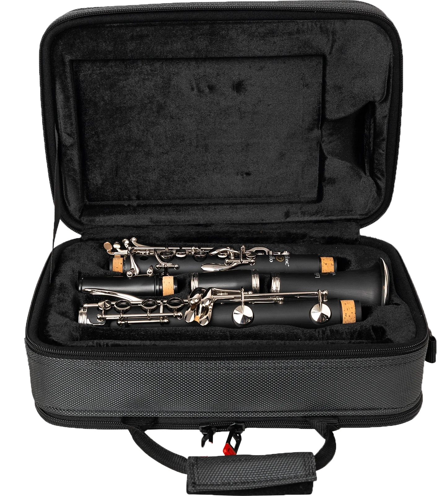

basisinformatie over klarinetten
Wil je een besklarinetfoto zien of een bas klarinetfoto
(bes voor besklarinet en bas voor basklarinet)
Klarinetten zijn instrumenten. Als je het specifieker wil maken is een klarinet een houtblaasinstrument met een enkel riet.
Een klarinet is meestal zwart. Je kent een klarinet misschien wel van de bekende kindershow spongebob. In deze show speelt een
zij karakter genaamd octo dit instrument. Een klarinet heeft verschillende onderdelen, hierdoor kun je de klarinet uit
elkaar halen om deze mee te nemen. De onderdelen heten als volgt: Het mondstuk, het tonnetje, kleine middendeel, grote middendeel
en beker. Hieronder een afbeelding waarin je alle onderdelen kunt zien.

Je kunt klarinetten vooral terugvinden bij harmonieorkesten en symfonieorkesten.
Als je meer informatie wil, klik dan op deze link